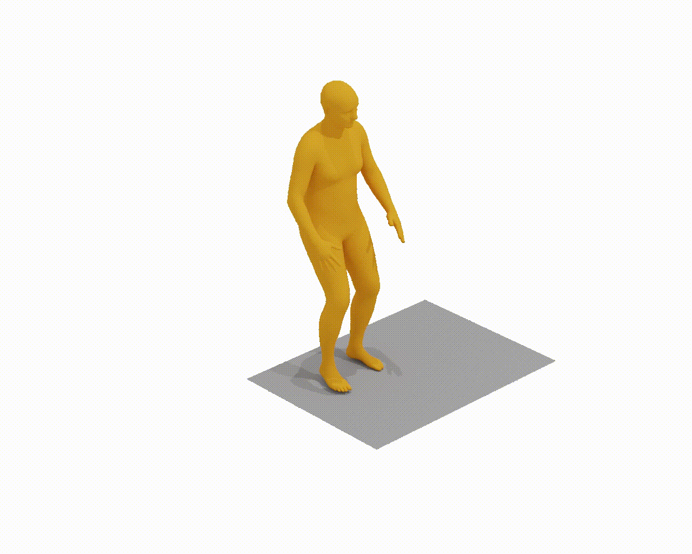
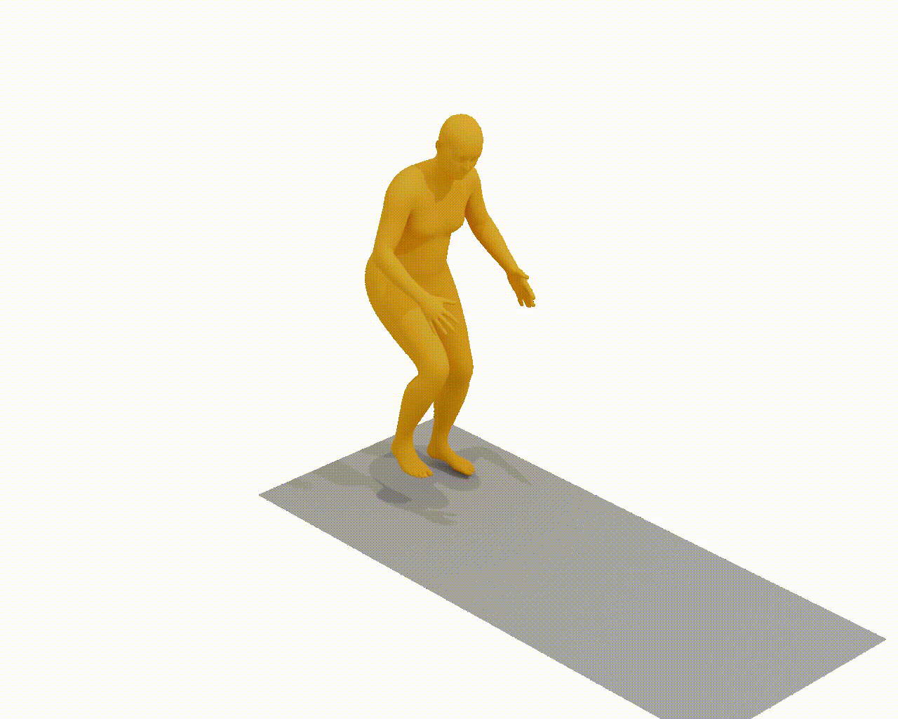

The statistics of the MMHU dataset.
Some examples of MMHU: each sample contains the motion sequence rendered on the original image, the behavior tags, and the text descriptions.
We collect data from three sources: the Waymo dataset, the YouTube videos, and the self-collected or paid driving videos. We designed a labeling pipeline to obtain high-quality data annotation with minimal human effort.
The current Motion Generation approaches are not capable of generating human motion in the street context (Left of each example). With fine-tuning on MMHU, they can properly generate such human motions (Right of each example).
Fine-tuning on MMHU also improves the performance of the baseline models on Motion Prediction, Intention Prediction, and Behavior VQA.
If you find our project useful, please considering citing the following paper: